누가 보고 싶으세요?
1누구에게 보내요?
2어떤 말투로 할까요?
3보낼 말을 톡! 여러 개 눌러도 돼요 · 직접 써도 돼요
📍위치도 물어볼까요? 선택 · 안 눌러도 돼요
친구는 카톡에서 눌러서 위치·문자·사진으로 바로 답장해요.
1내 위치 잡기
"어디야?" 문자를 받았으면 이것만 누르고 보내면 돼요.
2약속 장소·시간 선택 · 따로 정할 때만
▾ 눌러서 장소·시간 정하기

친구야 놀자!1만나서 뭐 할까? 하나 고르세요
🍽️ 먹고 마시기
🎲 놀이
🚶 바깥 활동
2언제?
3어디서? 안 써도 돼요
🎮폰으로 같이 놀까? 선택 · 각자 폰으로 바로 한판
넣으면 받는 사람이 📞 한 번에 전화할 수 있어요. 안 넣어도 돼요.
🎮 싸바 놀이터
🍒🍓🍋체리 팡!1분 과일 팡팡
🌱체리 키우기하루 3번 물 주기
7.00럭키 7초100억 체리
🎱당구 한판?진짜 쓰리쿠션
🪜사다리 한번?나도! 모으기
🪰파리 잡기눈 감고 도사
🍒짝 맞추기기억력 대결
✊✌️가위바위보체리랑 몇 연승?
🔢숫자 업다운1~100 몇 번 만에 맞힐까?
🐹두더지 잡기30초 콩콩!
ㅅㄱ초성 퀴즈사과? 시계?
👀내 눈 나이는?다른 색 찾기
🚦순발력 나이초록불에 콕!
⚫⚪체리랑 오목몇 수 만에 이길까? · 무르기 OK
⚫⚪체리랑 바둑9줄 한 판 · 집 세기 자동
🥏알까기당겼다 놓으면 딱!
 공짜 이모티콘움직이는 100개 + 수묵 24개
공짜 이모티콘움직이는 100개 + 수묵 24개
공짜 이모티콘움직이는 100개 + 수묵 24개
여기로 와!
한 번에 답장하기
✅ 싸바 연락처에도 저장했어요 — 어디야 받는 화면의 ‘📒 번호 찾아 전화’에서 찾을 수 있어요
나도 내 번호 주기친구야 놀자!
어디야?
📍 위치는 누를 때만 확인하고, 싸바는 저장하지 않아요.
💬 문자로 답하기